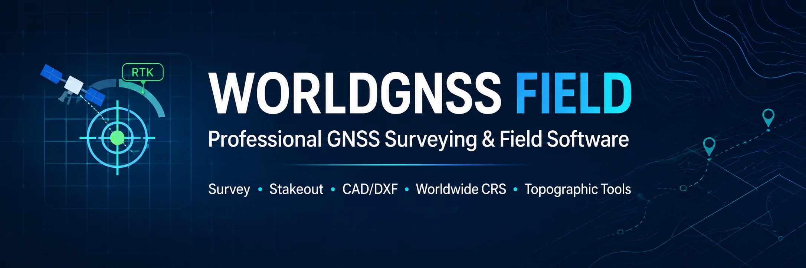
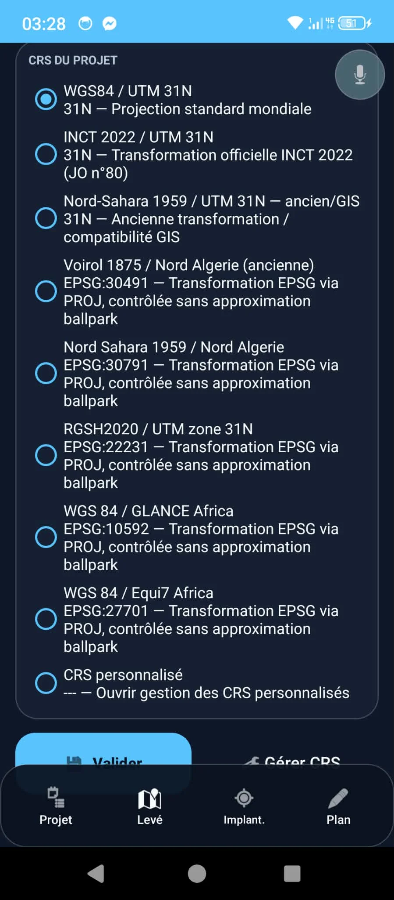
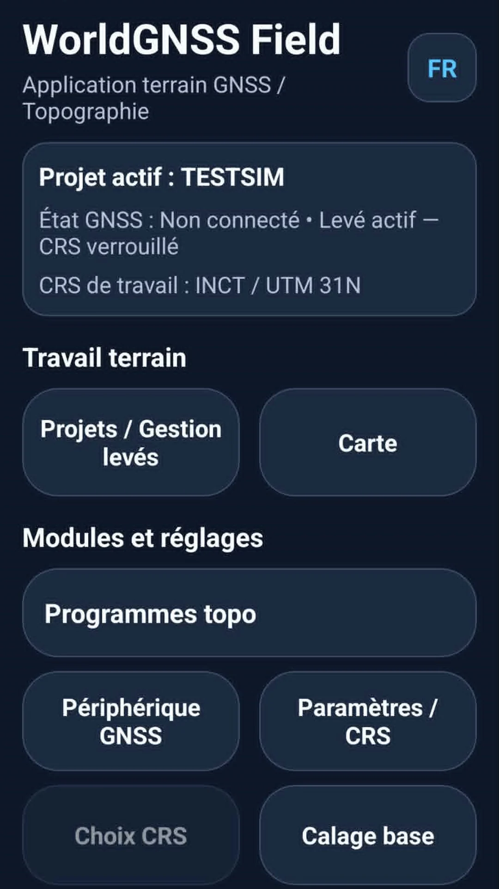
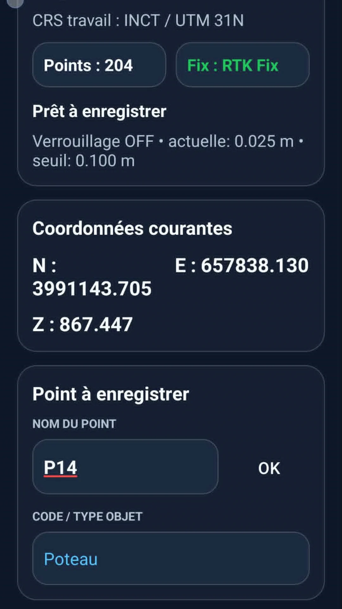
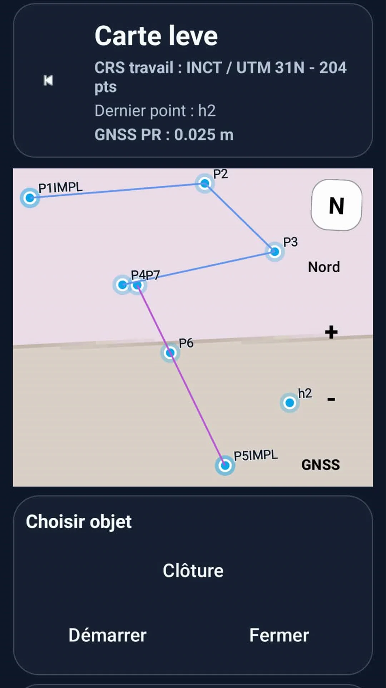
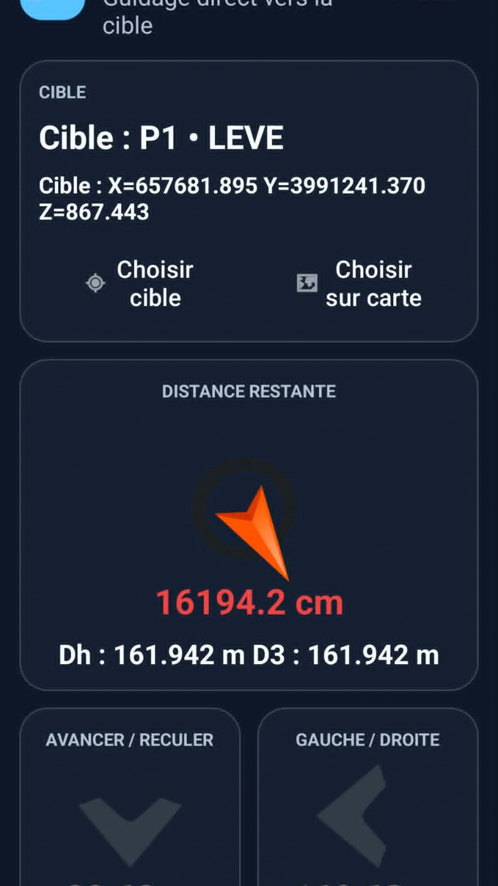
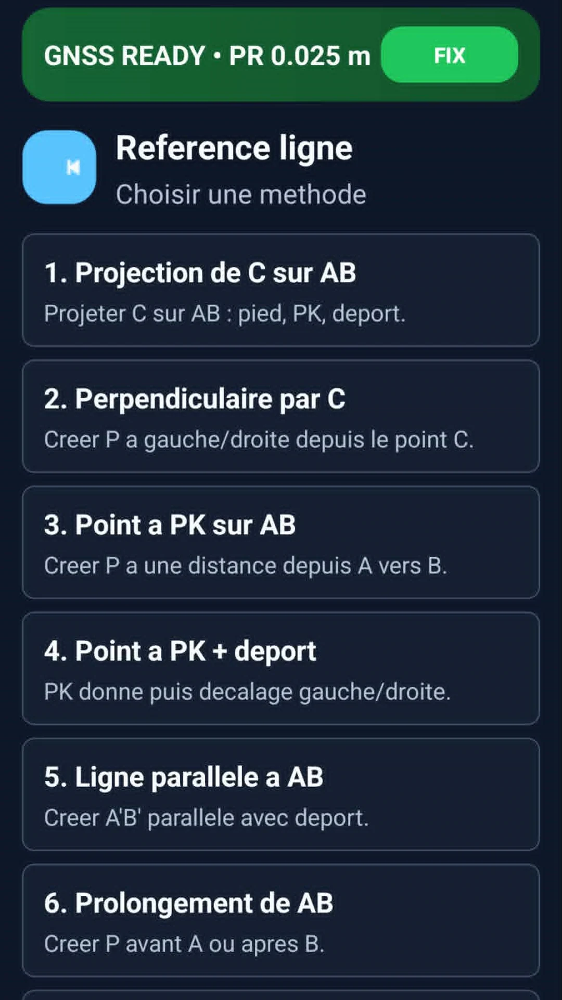
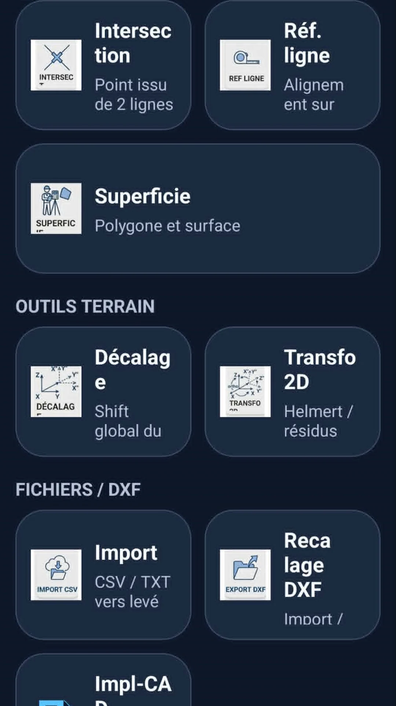

📍
GNSS Surveying
Record field points and work with GNSS/RTK positioning workflows.
Professional GNSS surveying and field software for surveyors, geomatics professionals and GNSS users worldwide.

WorldGNSS Field brings together practical surveying operations in a single mobile environment, with WGS84 as the geographic reference and projected coordinates derived in the working CRS.
Record field points and work with GNSS/RTK positioning workflows.
Stake out points and lines with direct field guidance and distance information.
Detect the country and UTM zone, then select relevant national projected coordinate systems.
Reference-line methods, intersections, areas and other reusable field computations.
Visualize survey points and objects on the map and manage field geometry.
Recalibrate drawings, align geometry, export, and send a calibrated DXF to CAD stakeout.
Georeference an image or scan and use it as a field support for staking.
Prepare and demonstrate workflows without a connected GNSS receiver.
Import, export, back up and restore field data with project-level controls.
WorldGNSS Field can detect the country and UTM zone from a WGS84 position and propose coordinate systems relevant to that geographic context.

Use these identifiers to distinguish the official application from similarly named surveying software.
dz.world.gnss.fieldA selection of real WorldGNSS Field screens from the Android application.






The complete illustrated French field manual is available online as a 70-page PDF. It covers startup, CRS/project setup, survey management, field surveying, conventional objects, area measurement, stakeout, DXF/scan workflows, import/export and simulation.
Download the official Android application using the package dz.world.gnss.field.
Open Google Play